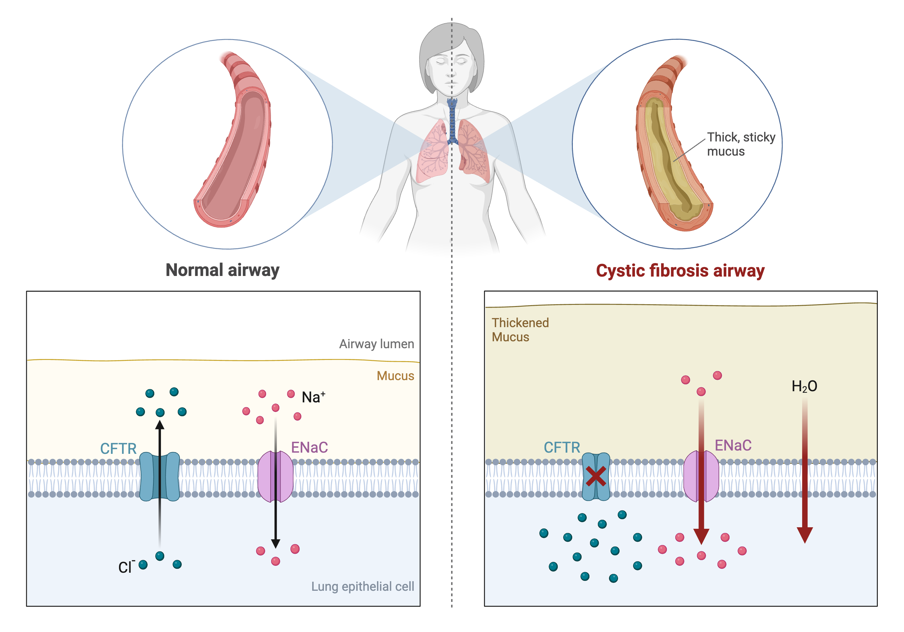
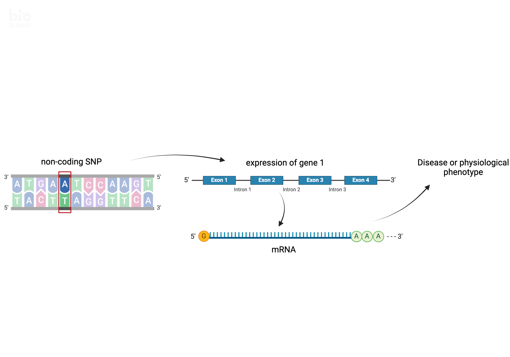
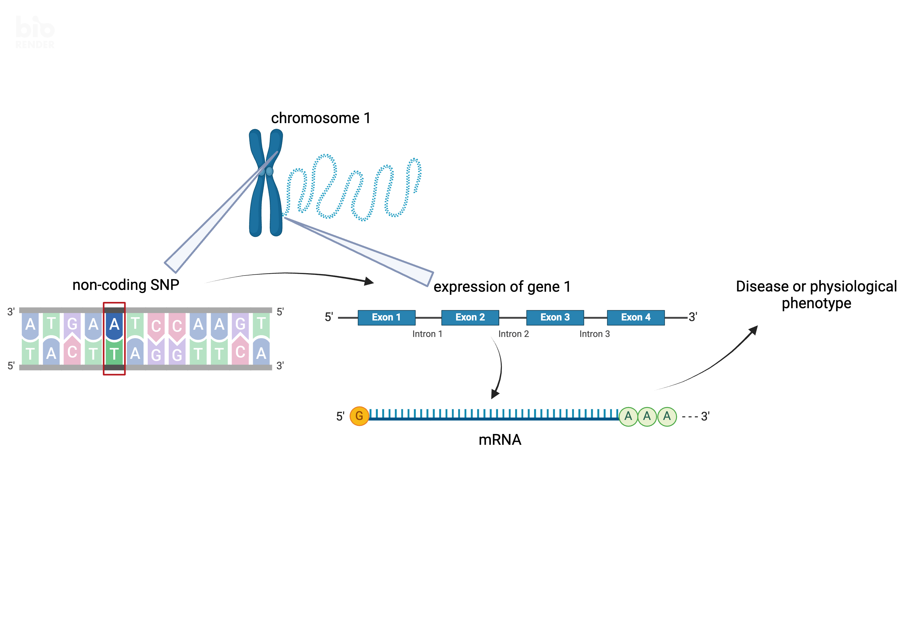
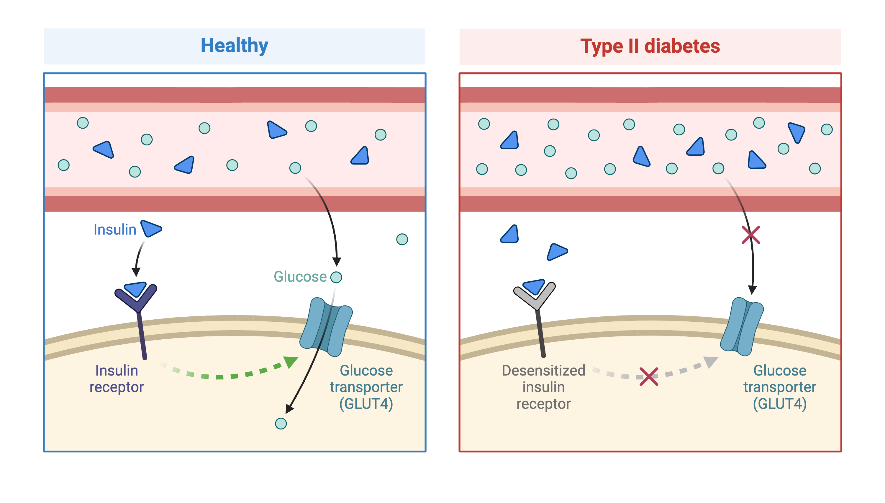
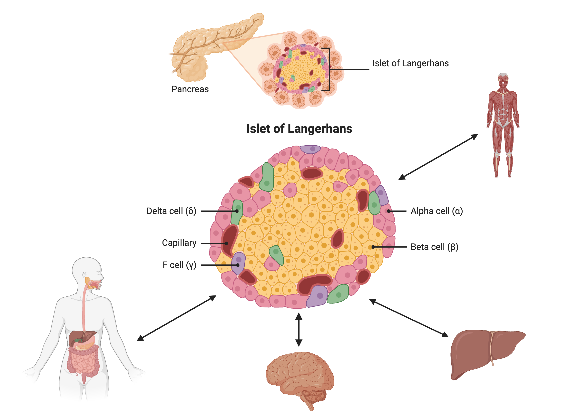
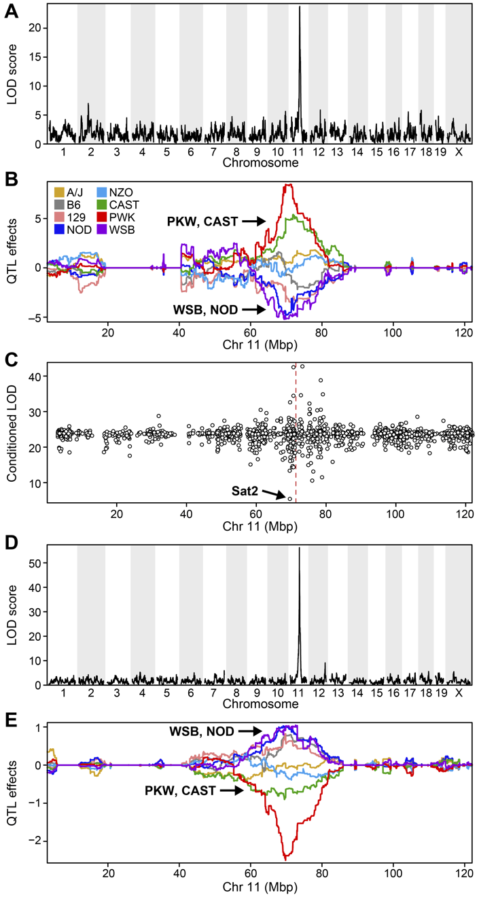
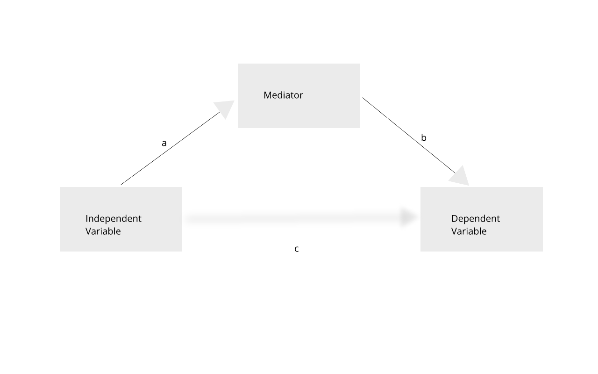

Content from Introduction
Last updated on 2024-11-26 | Edit this page
Overview
Questions
- What are expression quantitative trait loci (eQTL)?
- How are eQTL used in genetic studies?
Objectives
- Describe how an expression quantitative trait locus (eQTL) impacts gene expression.
- Describe how eQTL are used in genetic studies.
Introduction
Differences in disease risk between individuals are often caused by genetic variants. Identifying the effects of genetic variants is key to understanding disease phenotypes and their underlying biology. The effects of variants in many single-gene disorders, such as cystic fibrosis, are generally well-characterized and their disease biology well understood. For example, in cystic fibrosis, mutations in the coding region of the CFTR gene alter the three-dimensional structure of the chloride channel proteins in epithelial cells, affecting not only chloride transport, but also sodium and potassium transport in the lungs, pancreas and skin. The path from gene mutation to altered protein to disease phenotype is relatively simple and well understood.
 Created in BioRender
The most common human disorders, however, involve many genes interacting with each other and with the environment, a far more complicated path to follow than the path from a single gene mutation to its protein to a disease phenotype. Cardiovascular disease, Alzheimer’s disease, arthritis, diabetes and cancer involve a complex interplay of genes with environment, and their mechanisms are not well understood. One method of understanding the relationship between genetic variants and disease is a genome-wide association study (GWAS), which associates genetic variants with disease traits. It is tempting to think that these genetic variants would fall in coding regions. However, most GWAS variants for common diseases like diabetes are located in non-coding regions of the genome. These variants are therefore likely to fall in regulatory sequences which are involved in gene regulation.
 Created in BioRender
Gene regulation controls the quantity, timing and locale of gene expression. Analyzing the association between gene expression and genetic variants is known as expression quantitative trait locus (eQTL) mapping. eQTL mapping searches for associations between the expression of one or more genes and a genetic locus. Specifically, genetic variants underlying eQTL peak explain some of the variation in gene expression levels. eQTL studies can reveal the architecture of quantitative traits, connect DNA sequence variation to phenotypic variation, and shed light on transcriptional regulation and regulatory variation. Traditional analytic techniques like linkage and association mapping can be applied to thousands of gene expression traits (transcripts) in eQTL analysis, such that gene expression can be mapped in much the same way as a physiological phenotype like blood pressure or heart rate. Joining gene expression and physiological phenotypes with genetic variation can identify genes with variants affecting disease phenotypes.
To the simple diagram above we’ll add two more details. Non-coding SNPs can regulate gene expression from nearby locations on the same chromosome (in cis):
 Created in BioRender
SNPs that affect gene expression from afar, often from a different chromosome from the gene that they regulate are called distal (trans) regulators.
Created in BioRender
Key Points
- An expression quantitative trait locus (eQTL) explains part of the variation in gene expression.
- Traditional linkage and association mapping can be applied to gene expression traits (transcripts).
- Genetic variants, such as single nucleotide polymorphisms (SNPs), that underlie eQTL illuminate transcriptional regulation and variation.
Content from Genetic Drivers of Pancreatic Islet Function
Last updated on 2024-11-26 | Edit this page
Overview
Questions
- What is the hypothesis of an example eQTL study?
Objectives
- Describe an example eQTL study in Diversity Outbred mice.
- State the hypothesis from an example eQTL study in Diversity Outbred mice.
Genome-wide association studies (GWAS) often identify variants in non-coding regions of the genome, indicating that regulation of gene expression predominates in common diseases like type II diabetes. In type II diabetes (T2D) the pancreas produces less insulin and the body becomes less responsive to insulin.
 Created in BioRender
Most of the more than 100 genetic loci associated with T2D affect the function of pancreatic islets. This study offers supporting evidence for T2D-associated loci in human GWAS, most of which affect pancreatic islet function. Pancreatic islet cells produce endocrine hormones including insulin. A feedback loop of glucose and insulin activates beta cells that produce insulin and inhibits alpha cells in the pancreas.
 Created in BioRender
Susceptibility to type II diabetes (T2D) increases with obesity, such that T2D-associated genetic loci operate mainly under conditions of obesity (See Keller, Mark P et al. “Genetic Drivers of Pancreatic Islet Function.” Genetics vol. 209,1 (2018): 335-356). Like most GWAS loci, the T2D-associated genetic loci identified from GWAS have very small effect sizes and odds ratios just slightly more than 1.
This study explored islet gene expression in diabetes. The authors hypothesized that gene expression changes in response to dietary challenge would reveal signaling pathways involved in stress responses. The expression of many genes often map to the same locus, indicating that expression of these genes is controlled in common. If their mRNAs encode proteins with common physiological functions, the function of the controlling gene(s) is revealed. Variation in expression of the controlling gene(s), rather than a genetic variant, can be tested as an immediate cause of a disease-related phenotype.
In this study, Diversity Outbred (DO) mice were fed a high-fat, high-sugar diet as a stressor, sensitizing the mice to develop diabetic traits. Body weight and plasma glucose, insulin, and triglyceride measurements were taken biweekly. Food intake could be measured since animals were individually housed. A glucose tolerance test at 18 weeks of age provided measurement of dynamic glucose and insulin changes at 5, 15, 30, 60 and 120 minutes after glucose administration. Area under the curve (AUC) was determined from these time points for both plasma glucose and insulin levels.
In the figure above, time is plotted on the X-axis and glucose or insulin levels are plotted on the Y-axis. Blood is taken at the beginning of the test and at several time points after the glucose bolus. The glucose or insulin AUC is the area under the measured points down to the baseline level. A diversity of responses to the glucose tolerance test is illustrated below.
Homeostatic model assessment (HOMA) quantifies insulin resistance (IR) and beta cell (\(\beta\)) function. For IR, the equation quantifying insulin resistance is the product of glucose and insulin in mg/dL divided by 405.
\(HOMA-IR = (glucose \times insulin) / 405\)
For beta cell function, the equation is
\(HOMA-\beta = (360 \times insulin) / (glucose - 63)\)
expressed as a percentage. Insulin resistance and beta cell function were determined after the glucose tolerance test was given. Islet cells were isolated from pancreas, and RNA extracted and libraries constructed from isolated RNA for gene expression measurements.
Genome scans were performed with the leave-one-chromosome-out (LOCO) method for kinship correction. Sex and experimental cohort (DO wave) were used as covariates. The results of one scan for insulin area under the curve (AUC) is shown below with a strong peak on chromosome 11. In this lesson, we will look into genes located under this peak.
Key Points
- Many GWAS studies identify SNPs which to no lie within coding regions of the genome.
- This implies that the SNPs lie within regulatory sequences which affect gene expression levels.
- Merging gene expression with physiological trait QTL mapping can help to identify genes which affect physiological trait variation.
Content from Load and Explore Data
Last updated on 2024-11-26 | Edit this page
Overview
Questions
- What data are required for eqtl mapping?
Objectives
- To provide an example and exploration of data used for eqtl mapping.
R
library(knitr)
library(ggbeeswarm)
library(tidyverse)
library(qtl2)
library(DESeq2)
Physiological Phenotypes
You should have downloaded data files already when following the setup instructions. The complete data used in these analyses are available from Data Dryad. The files we will use are in a simpler format than those on Data Dryad.
Load in the physiological phenotypes.
R
# load the data
pheno <- readRDS(file = 'data/attie_do_pheno.rds')
pheno_dict <- readRDS(file = 'data/attie_do_pheno_dict.rds')
covar <- readRDS(file = 'data/attie_do_covar.rds')
See the data dictionary to see a description of each of these phenotypes. You can also view a table of the data dictionary.
R
pheno_dict |>
select(description, formula) |>
kable()
| description | formula | |
|---|---|---|
| mouse | Animal identifier. | NA |
| sex | Male (M) or female (F). | NA |
| sac_date | Date when mouse was sacrificed; used to compute days on diet, using birth dates. | NA |
| partial_inflation | Some mice showed a partial pancreatic inflation which would negatively effect the total number of islets collected from these mice. | NA |
| coat_color | Visual inspection by Kathy Schuler on coat color. | NA |
| oGTT_date | Date the oGTT was performed. | NA |
| FAD_NAD_paired | A change in the method that was used to make this measurement by Matt Merrins’ lab. Paired was the same islet for the value at 3.3mM vs. 8.3mM glucose; unpaired was where averages were used for each glucose concentration and used to compute ratio. | NA |
| FAD_NAD_filter_set | A different filter set was used on the microscope to make the fluorescent measurement; may have influenced the values. | NA |
| crumblers | Some mice store food in their bedding (hoarders) which would be incorrectly interpreted as consumed. | NA |
| birthdate | Birth date | NA |
| diet_days | Number of days. | NA |
| num_islets | Total number of islets harvested per mouse; negatively impacted by those with partial inflation. | NA |
| Ins_per_islet | Amount of insulin per islet in units of ng/ml/islet. | NA |
| WPIC | Derived number; equal to total number of islets times insulin content per islet. | Ins_per_islet * num_islets |
| HOMA_IR_0min | glucose*insulin/405 at time t=0 for the oGTT | Glu_0min * Ins_0min / 405 |
| HOMA_B_0min | 360 * Insulin / (Glucose - 63) at time t=0 for the oGTT | 360 * Ins_0min / (Glu_0min - 63) |
| Glu_tAUC | Area under the curve (AUC) calculation without any correction for baseline differences. | complicated |
| Ins_tAUC | Area under the curve (AUC) calculation without any correction for baseline differences. | complicated |
| Glu_6wk | Plasma glucose with units of mg/dl; fasting. | NA |
| Ins_6wk | Plasma insulin with units of ng/ml; fasting. | NA |
| TG_6wk | Plasma triglyceride (TG) with units of mg/dl; fasting. | NA |
| Glu_10wk | Plasma glucose with units of mg/dl; fasting. | NA |
| Ins_10wk | Plasma insulin with units of ng/ml; fasting. | NA |
| TG_10wk | Plasma triglyceride (TG) with units of mg/dl; fasting. | NA |
| Glu_14wk | Plasma glucose with units of mg/dl; fasting. | NA |
| Ins_14wk | Plasma insulin with units of ng/ml; fasting. | NA |
| TG_14wk | Plasma triglyceride (TG) with units of mg/dl; fasting. | NA |
| food_ave | Average food consumption over the measurements made for each mouse. | complicated |
| weight_2wk | Body weight at indicated date; units are gm. | NA |
| weight_6wk | Body weight at indicated date; units are gm. | NA |
| weight_10wk | Body weight at indicated date; units are gm. | NA |
| DOwave | Wave (i.e., batch) of DO mice | NA |
Phenotype Distributions
Boxplots are a great way to view the distribution of the data and to identify any outliers. We will be using the total area under the curve of insulin from the glucose tolerance test (Ins_tAUC).
We will log-transform the data using the scale_y_log10()
function. We have also overlaid the data points using ggbeeswarm’s geom_beeswarm.
We have told geom_beeswarm() to plot the points with some
transparency using the argument alpha = 0.2. The
alpha argument ranges between 0 (completely transparent) to
1 (completely opaque). A value of 0.1 means mostly transparent.
R
# plot Insulin on a log 10 scale
ggplot(pheno, aes(sex, Ins_tAUC)) +
geom_boxplot() +
geom_beeswarm(alpha = 0.2) +
scale_y_log10() +
labs(title = "Insulin area under the curve", y = "Insulin tAUC") +
theme(text = element_text(size = 20))
Challenge 1
How many orders of magnitude (powers of 10) does Insulin tAUC span?
Insulin tAUC spans three orders of magnitude, from near 10 to over 1000.
Challenge 2
Which sex has higher median Insulin tAUC values?
Males have higher Insulin tAUC than females.
The boxplot is a useful plot to visualize the distribution of your data.
Quality Control of Data
Many statistical tests rely upon the data having a “normal” (or Gaussian) distribution. Many biological phenotypes do not follow this distribution and must be transformed before analysis. This is why we log-transformed the data in the plots above.
While we can “eyeball” the distributions in the boxplot, it would be better to use a “quantile-quantile” plot.
R
pheno |>
ggplot(aes(sample = Ins_tAUC)) +
stat_qq() +
geom_qq_line() +
facet_wrap(~sex) +
labs(title = "Quantile-Quantile Plot of Ins_tAUC",
x = "Normal Quantiles",
y = "Ins_tAUC") +
theme(text = element_text(size = 20))
In these plots, the “quantiles” (e.g. percentiles) of the normal distribution are plotted on the X-axis and the data are plotted on the Y-axis. The line indicates the quantiles that would be followed by a normal distribution. The untransformed data do not follow a normal distribution because the points are far from the line.
Next, we will log-transform the data and then create a quantile-quantile plot.
R
pheno |>
mutate(Ins_tAUC = log(Ins_tAUC)) |>
ggplot(aes(sample = Ins_tAUC)) +
stat_qq() +
geom_qq_line() +
facet_wrap(~sex) +
labs(title = "Quantile-Quantile Plot of log(Ins_tAUC)",
x = "Normal Quantiles",
y = "log(Ins_tAUC)") +
theme(text = element_text(size = 20))
Challenge 3
Does the log transformation make the data more normally distributed? Explain your answer.
Yes. The log transformation makes the data more normally distributed because the data points follow the normality line more closely.
Challenge 4
Do any data points look suspicious to you? Explain your answer.
The data points that deviate from the normality line would be worth investigating. All data deviates somewhat from normality, but the three lowest points in the male data plot would be worth investigating. They may be real, but there may also have been mishap in the assay.
Another way to identify outliers is to standardize the data and look for data points that are more than four standard deviations from the mean.
To do this, we will log transform and standardize Insulin tAUC.
R
ins_tauc = pheno |>
select(mouse, sex, Ins_tAUC) |>
group_by(sex) |>
mutate(Ins_tAUC = log(Ins_tAUC),
Ins_tAUC = scale(Ins_tAUC))
ins_tauc |>
ggplot(aes(x = sex, y = Ins_tAUC)) +
geom_boxplot() +
geom_beeswarm(alpha = 0.2) +
geom_hline(aes(yintercept = -4), color = 'red') +
geom_hline(aes(yintercept = 4), color = 'red') +
labs(title = "Distribution of Standardized Ins_tAUC") +
theme(text = element_text(size = 20))
There are no data points outside of the four standard deviation limits.
Gene Expression Data
Let’s read in the gene expression data. This has been compiled in
R
annot <- readRDS(file = 'data/attie_do_expr_annot.rds')
raw <- readRDS(file = 'data/attie_do_expr_raw.rds')
We have loaded in two data objects:
-
annot: a data frame containing gene annotation, and -
raw: a numeric matrix containing the un-normalized expression counts.
Challenge 5: How many samples and genes are there?
Use the dim command or the Environment tab to determine
the number of samples and genes in raw.
R
dim(raw)
OUTPUT
[1] 378 21771There are 378 samples and 21,771 genes.
The expression objects that we have loaded in are organized such that the transcripts and samples are aligned between the objects. The figure below may help you to visualize the relationship between the expression, annotation, and covariates.
Let’s look at the rows in the gene annotation object.
R
head(annot)
OUTPUT
gene_id symbol chr start end strand
ENSMUSG00000000001 ENSMUSG00000000001 Gnai3 3 108.10728 108.14615 -1
ENSMUSG00000000028 ENSMUSG00000000028 Cdc45 16 18.78045 18.81199 -1
ENSMUSG00000000037 ENSMUSG00000000037 Scml2 X 161.11719 161.25821 1
ENSMUSG00000000049 ENSMUSG00000000049 Apoh 11 108.34335 108.41440 1
ENSMUSG00000000056 ENSMUSG00000000056 Narf 11 121.23725 121.25586 1
ENSMUSG00000000058 ENSMUSG00000000058 Cav2 6 17.28119 17.28911 1
middle nearest.marker.id biotype module
ENSMUSG00000000001 108.12671 3_108090236 protein_coding darkgreen
ENSMUSG00000000028 18.79622 16_18817262 protein_coding grey
ENSMUSG00000000037 161.18770 X_161182677 protein_coding grey
ENSMUSG00000000049 108.37887 11_108369225 protein_coding greenyellow
ENSMUSG00000000056 121.24655 11_121200487 protein_coding brown
ENSMUSG00000000058 17.28515 6_17288298 protein_coding brown
hotspot
ENSMUSG00000000001 <NA>
ENSMUSG00000000028 <NA>
ENSMUSG00000000037 <NA>
ENSMUSG00000000049 <NA>
ENSMUSG00000000056 <NA>
ENSMUSG00000000058 <NA>There are many columns in the gene annotation file, including the Ensembl ID, gene symbol, chromosome, start and end of the gene.
Next, let’s look at the sample covariates.
R
head(covar)
OUTPUT
mouse sex DOwave diet_days
DO021 DO021 F 1 112
DO022 DO022 F 1 112
DO023 DO023 F 1 112
DO024 DO024 F 1 112
DO025 DO025 F 1 114
DO026 DO026 F 1 114The sample covariates have information about the sex and DO
generation, indicated as DOwave, of each mouse.
In order to make reasonable gene comparisons between samples, the count data needs to be normalized. In the quantile-quantile (Q-Q) plot below, count data for the first gene are plotted over a diagonal line tracing a normal distribution for those counts. Notice that most of the count data values lie off of this line, indicating that these gene counts are not normally distributed.
Q-Q plots for the first six genes show that count data for these genes are not normally distributed. They are also not on the same scale. The y-axis values for each subplot range to 20,000 counts in the first subplot, 250 in the second, 90 in the third, and so on.
R
raw |>
as.data.frame() |>
select(ENSMUSG00000000001:ENSMUSG00000000058) |>
pivot_longer(cols = everything(), names_to = 'gene', values_to = 'value') |>
ggplot(aes(sample = value)) +
stat_qq() +
geom_qq_line() +
facet_wrap(~gene, scales = 'free') +
labs(title = 'Count distribution for six genes',
xlab = 'Normal percentiles', y = 'Count percentiles') +
theme(text = element_text(size = 20))
Since each gene has a different distribution, we will need to normalize the gene expression data. We will do this in a future lesson.
Key Points
- It is important to inspect the phenotype distributions and to transform them to be nearly normal.
Content from Mapping A Single Gene Expression Trait
Last updated on 2024-11-26 | Edit this page
Overview
Questions
- What are the steps in QTL mapping?
- How do I map one gene expression trait?
Objectives
- Review the steps in QTL mapping.
- To run a QTL analysis for expression data.
Physiological Phenotypes
In this data set, we have 20 phenotypes for 500 Diversity Outbred
mice. pheno is a data frame containing the phenotype data
as well as covariates. Click on the triangle to the left of
pheno in the Environment pane to view its contents. Run
names(pheno) to list the variables.
pheno_dict is the phenotype dictionary. This data frame
contains information on each variable in pheno, including
name,short name, pheno_type,
formula (if used) and description.
Since the paper is interested in type 2 diabetes and insulin
secretion, we will choose insulin tAUC (area under the
curve which was calculated without any correction for baseline
differences) for this review.
Many statistical models, including the QTL mapping model in
qtl2, expect that the incoming data will be normally
distributed. You may use transformations such as log or square root to
make your data more normally distributed. Here, we will log transform
the data.
Let’s make a variable for insulin tAUC so that we don’t have to type as much.
R
ins_tauc <- pheno[, 'Ins_tAUC', drop = FALSE]
Next, let’s look at the distribution of insulin tAUC using a histogram.
R
hist(ins_tauc[,1],
breaks = 20,
main = "Insulin Area Under the Curve")
This is clearly not Normally distributed. In fact, this type of distribution is often log normal.
Now, let’s apply the log() function to this data in an
effort to make the distribution more normal.
R
ins_tauc$Ins_tAUC_log <- log(ins_tauc$Ins_tAUC)
Let’s make a histogram of the log-transformed data.
R
hist(ins_tauc$Ins_tAUC_log,
breaks = 20,
main = "Insulin tAUC (log-transformed)")
This looks much better! The data has a somewhat Gaussian shape. Technically, the assumptions of a linear model require that the residuals be normally distributed. In practice, transforming the input data to be normally distributed helps to make the residuals normally distributed.
Expression Data
In a previous lesson, we loaded in the raw transcript expression data and noticed that the distribution of each gene was non-Gaussian and different.
There is another issue that we must also be addressed. Each sample has a different total number of counts. This affects our ability to compare values between samples. For example, say that we look at the expression of Gene1 in two samples and find that both samples have 500 counts for Gene1. It appears that Gene1 is equally expressed in both samples. However, suppose that the total counts (i.e. the sum of counts for all genes in each sample) is 10 million for sample 1 and 20 million for sample 2. The sum of all counts across all genes in a sample is also called the library size. Then we need to scale the counts for Gene1 by the total counts. This is shown in the table below.
| Sample | Gene1 Counts | Total Counts | Proportion |
|---|---|---|---|
| 1 | 500 | 10e6 | 5e-05 |
| 2 | 500 | 20e6 | 2.5e-05 |
In this case, we can see that Gene1 has lower expression in sample 2 compared to sample 1. Although the actual adjustment for library size (i.e. total counts) is more complicated, this is the rationale for adjusting each sample.
Let’s plot a histogram of the total counts in each sample.
R
hist(rowSums(raw) * 1e-6,
breaks = 50,
main = "Histogram of Total Counts per Sample",
xlab = "Total Counts (Millions)")

As you can see, total counts range from 15 to 50 million reads.
To recap, before we perform any analysis using the transcript expression data, we need to normalize it by adjusting for library size and transforming the expression of each gene to be Gaussian.
Normalizing Gene Expression
We will use the DESeq2 package to adjust the counts for library size. DESeq2 is a large package which performs many types of analyses. Further details are in the DESeq2 Tutorial.
First, we must create a DESeq object. We need the raw counts, rounded so that all values are integers, and the sample covariate data. We will have to subset the sample covariates to include only the expression samples.
R
expr_covar = subset(covar, mouse %in% rownames(raw))
expr_covar = expr_covar[match(rownames(raw), expr_covar$mouse),]
In order to create the DESeq2 object, we will need to transpose the expression data. This is because DESeq2 requires that the samples be in columns and the genes in rows. We will also tell DESeq2 what the design variables are for our data, although they are not used in this case. These would be used if we were searching for differentially expressed genes.
R
dds = DESeqDataSetFromMatrix(countData = t(round(raw)),
colData = expr_covar,
design = ~ 1)
OUTPUT
converting counts to integer modeNext, we will run DESeq2 and let it adjust the expression data for differing library sizes.
R
dds = DESeq(dds)
OUTPUT
estimating size factorsOUTPUT
estimating dispersionsOUTPUT
gene-wise dispersion estimatesOUTPUT
mean-dispersion relationshipOUTPUT
final dispersion estimatesOUTPUT
fitting model and testingOUTPUT
-- replacing outliers and refitting for 155 genes
-- DESeq argument 'minReplicatesForReplace' = 7
-- original counts are preserved in counts(dds)OUTPUT
estimating dispersionsOUTPUT
fitting model and testingOnce this is done, we will get the expression data after it has been transformed using the Variance Stabilizing Transformation (VST). The VST adjusts the variance of the genes such that it is not related to the mean gene expression level.
R
expr = assays(dds)[[1]]
tibble(mean = rowMeans(expr),
sd = apply(expr, 1, sd)) |>
ggplot(aes(mean, sd)) +
geom_point() +
scale_x_log10() +
scale_y_log10() +
labs(title = "Mean vs. Std. Dev. of Before VST",
x = "log(Mean)", y = "log(Std. Dev.)") +
theme(text = element_text(size = 20))

R
rm(expr)
The plot above shows the mean expression value for each gene versus the standard deviation of each gene. Both axes are log-transformed. As you can see, there is a positive correlation between the mean and the standard deviation. We would like each gene to have the same variance, regardless of the mean, for each gene.
Next, we will apply the variance stabilizing transformation and will transpose the expression values.
R
expr = assays(vst(dds))[[1]]
expr = t(expr)
Let’s look at the mean versus the standard deviation of each gene after normalization.
R
tibble(mean = colMeans(expr),
sd = apply(expr, 2, sd)) |>
ggplot(aes(mean, sd)) +
geom_point() +
scale_x_log10() +
scale_y_log10() +
labs(title = "Mean vs. Std. Dev. of After VST",
x = "log(Mean)", y = "log(Std. Dev.)") +
theme(text = element_text(size = 20))

The standard deviation is now largely unrelated to the mean. At lower expression levels, the standard deviation is somewhat related to the mean.
At this point, while each gene has been normalized, each gene has a different distribution. In QTL mapping, we often use permutations to estimate significance thresholds. This approach works for one phenotype. However, if other phenotypes have different distributions, then the significance threshold for one phenotype cannot be used for another. This means that we would have to perform 1,000 permutations for each gene. While modern computing clusters can do this, it is time consuming.
Another approach is to force the distribution of each gene to be identical. Then, we can perform permutations on one gene and get a significance threshold for all genes.
We can force the distribution of each gene to be Gaussian and identical for all genes using an inverse-normal or rank-Z transformation.
R
rankZ = function(x) {
x = rank(x, na.last = "keep", ties.method = "average") / (sum(!is.na(x)) + 1)
return(qnorm(x))
}
expr_rz = apply(expr, 2, rankZ)
Boxplots of raw counts for six example genes are shown at left below. Notice that the median count values (horizontal black bar in each boxplot) are not comparable between the genes because the counts are not on the same scale. At right, boxplots for the same genes show normalized count data on the same scale.
R
tmp = raw |>
as.data.frame() |>
select(ENSMUSG00000000001:ENSMUSG00000000058) |>
pivot_longer(cols = everything(), names_to = 'gene', values_to = 'value') |>
mutate(type = 'raw')
norm = expr |>
as.data.frame() |>
select(ENSMUSG00000000001:ENSMUSG00000000058) |>
pivot_longer(cols = everything(), names_to = 'gene', values_to = 'value') |>
mutate(type = 'normalized')
bind_rows(tmp, norm) |>
mutate(type = factor(type, levels = c('raw', 'normalized'))) |>
ggplot(aes(gene, value)) +
geom_boxplot() +
facet_wrap(~type, scales = 'free') +
labs(title = 'Count distributions for example genes') +
theme(text = element_text(size = 20),
axis.text.x = element_text(angle = 90, hjust = 0.5, vjust = 1))

R
rm(tmp, norm)
In the rankZ-transformed data, every gene has the same distribution.
R
expr_rz |>
as.data.frame() |>
select(ENSMUSG00000000001:ENSMUSG00000000058) |>
pivot_longer(cols = everything(), names_to = 'gene', values_to = 'value') |>
ggplot(aes(gene, value)) +
geom_boxplot() +
labs(title = 'RankZ distributions for example genes') +
theme(text = element_text(size = 20),
axis.text.x = element_text(angle = 90, hjust = 0.5, vjust = 1))

Before moving on, let’s remove data objects that we won’t be using again.
R
rm(dds, raw, expr)
The Marker Map
The marker map contains a list of the genetic marker positions for each marker in the genoprobs. Let’s read it in now.
R
map <- readRDS(file = 'data/attie_do_map.rds')
The marker map for each chromosome is stored in the map
object. This is used to plot the LOD scores calculated at each marker
during QTL mapping. Each list element is a numeric vector with each
marker position in megabases (Mb). Here we are using the 69K grid marker
file. Often when there are numerous genotype arrays used in a study, we
interpolate all to a 69k grid file so we are able to combine all samples
across different array types.
Look at the structure of map in the Environment tab by
clicking the triangle to the left or by running str(map) in
the Console.
Each element in map contains a list of marker positions and names.
R
head(map[[1]])
OUTPUT
1_3e+06 1_3041392 1_3346528 1_3651663 1_3657931 1_3664199
3.000000 3.041392 3.346528 3.651663 3.657931 3.664199 The names of the markers consist of the chromosome and the bp position, separated by an underscore (_).
Callout
The marker positions in the map must be in Mb.
Genotype probabilities
Previously, we loaded in the physiological phenotypes, the sample covariates, and the transcript expression data and annotation. We also normalized and rankZ transformed the expression data.
In order to perform QTL mapping, we also need the genotype probabilities (i.e genoprobs). In this lesson, we have already processed the genotypes and produced the genoprobs using calc_genoprob.
R
probs <- readRDS("data/attie_DO500_genoprobs_v5.rds")
At this point, you should have several data objects in your environment. Look at the Environment tab to see what data objects are in your environment. It should look like the figure below.
 Each element of
Each element of
probs is a 3-dimensional array containing the founder
allele dosages for each sample at each marker on one chromosome. These
are the 8 state allele probabilities (not 32) using the 69k marker grid
for the same 500 DO mice that also have clinical phenotypes. We have
already calculated genotype probabilities for you, so you can skip the
step for calculating
genotype probabilities and the optional step for calculating allele
probabilities.
Next, we look at the dimensions of probs for chromosome
1:
R
dim(probs[[1]])
OUTPUT
[1] 500 8 4711Each list element of the genoprobs has 500 samples, eight founders, and a variable number of markers, depending on the chromosome.
As a reminder, this is what the genoprobs of one mouse look like along one chromosome.
R
plot_genoprob(probs, map, ind = 1, chr = 1)

In the plot above, the founder contributions, which range between 0 and 1, are colored from white (= 0) to black (= 1.0). A value of ~0.5 is grey. The markers are on the X-axis and the eight founders (denoted by the letters A through H) on the Y-axis. Starting at the left, we see that this sample has genotype GH because the rows for G & H are grey, indicating values of 0.5 for both alleles. Moving along the genome to the right, the genotype becomes HH where where the row is black indicating a value of 1.0. This is followed by CD, DD, DG, AD, AH, CE, etc. The values at each marker sum to 1.0.
Kinship Matrix
We also use a kinship matrix in the mapping model to adjust the relatedness between mice. We also use a different kinship matrix on each chromosome by including all of the markers except the ones on the current chromosome. This is called the “Leave-One-Chromosome-Out” (LOCO) method. We use the genoprobs to create the kinship matrices in the calc-kinship function.
R
K <- calc_kinship(probs = probs,
type = 'loco')
And let’s save the kinship matrices so that we don’t have to build them again.
R
saveRDS(K, file = "data/attie_do_kinship.rds")
Let’s look at a part of one of the kinship matrices.
R
n_samples <- 50
heatmap(K[[1]][1:n_samples, 1:n_samples], main = "Kinship Between Mice")

The figure above shows kinship between all pairs of samples. Light yellow indicates low kinship and dark red indicates higher kinship. Orange values indicate varying levels of kinship between 0 and 1. The dark red diagonal of the matrix indicates that each sample is identical to itself. The orange blocks along the diagonal may indicate close relatives (i.e. siblings or cousins).
Covariates
Next, we need to create additive covariates that will be used in the
mapping model. First, we need to see which covariates are significant.
In the data set, we have sex, DOwave (wave
(i.e., batch) of DO mice) and diet_days (number of days on
diet) to test whether there are any sex, batch or diet effects.
We will use sex and DOwave as additive
covariates. Sex and DO outbreeding generation are often sensible
covariates to add. We will convert sex and
DOwave to factors and then use model.matrix to
create the covariates matrix that qtl2 will use.
R
pheno$sex <- factor(pheno$sex)
pheno$DOwave <- factor(pheno$DOwave)
addcovar <- model.matrix(~sex + DOwave, data = pheno)[,-1]
Callout
The sample IDs must be in the rownames of pheno,
addcovar, genoprobs and K.
qtl2 uses the sample IDs to align the samples between
objects.
Considering the paper included the covariate, diet_days,
we will include that as well.
R
head(addcovar)
OUTPUT
sexM DOwave2 DOwave3 DOwave4 DOwave5
DO021 0 0 0 0 0
DO022 0 0 0 0 0
DO023 0 0 0 0 0
DO024 0 0 0 0 0
DO025 0 0 0 0 0
DO026 0 0 0 0 0Performing a Genome Scan
We will perform a genome scan for insulin tAUC, comparing the results of the untransformed and log-transformed results. Use the scan1 function to map insulin tAUC.
R
lod_ins <- scan1(genoprobs = probs,
pheno = ins_tauc,
kinship = K,
addcovar = addcovar)
After the genome scan, lod_ins contains the LOD scores
for both the untransformed and log-transformed insulin values.
R
head(lod_ins)
OUTPUT
Ins_tAUC Ins_tAUC_log
1_3000000 5.162655 4.333006
1_3041392 5.163071 4.333039
1_3346528 5.207254 4.396324
1_3651663 5.011606 4.261237
1_3657931 5.047916 4.286642
1_3664199 5.093272 4.314025Let’s plot both LOD curves.
R
plot_scan1(x = lod_ins,
map = map,
lodcolumn = "Ins_tAUC_log",
main = "Insulin tAUC")
plot_scan1(x = lod_ins,
map = map,
lodcolumn = "Ins_tAUC",
col = rgb(0.8, 0, 0, 0.5),
lty = "dashed",
add = TRUE)
legend("topleft",
legend = c("log-transformed", "untransformed"),
col = c("black", "red3"),
lwd = 2)

Challenge 1: Which phenotype has the higher LOD score on chromosomes 11 and 17?
The log-transformed data has a higher LOD score on chromosome 11. However, the untransformed data has a higher LOD on chromosome 17.
The challenge above shows the value of transforming data to make it
more normally distributed. We do not have a peak for
log(ins_tauc) on chromosome 11 which we will work with for
the rest of the lesson.
Because we are working with the insulin tAUC phenotype,
which has a QTL peak on chromosome 11, we will map a gene on chromosome
11 which may influence insulin and glucose levels. This gene is called
Hnf1b. Since
the expression data uses Ensembl IDs in its column names, we need to
find the Ensembl ID for this gene:
R
ensid <- annot |>
subset(symbol == "Hnf1b") |>
pull(gene_id)
ensid
OUTPUT
[1] "ENSMUSG00000020679"Next, we will create a variable which contains the rankZ Hnf1b expression values to reduce our typing.
R
hnf1b = expr_rz[,ensid, drop = FALSE]
Callout
Remember to use the “drop = FALSE” argument so that R will not convert the expression data from a matrix to a vector.
R
lod_hnf1b = scan1(genoprobs = probs,
pheno = hnf1b,
kinship = K,
addcovar = addcovar)
Challenge 2: Plot Hnf1b Genome Scan
Use the plot_scan1 function to plot the Hnf1b genome scan.
R
plot_scan1(x = lod_hnf1b,
map = map,
main = "Hnf1b")

Permutations
We now have a peaks on chromosome 11 for both insulin tAUC and Hnf1b, but we do not know if the LODs are significant. In order to assess significance, we will use permutations.
Callout
Don’t run the permutation block below. It will take hours to complete. We have pre-computed the permutations and have code for you to load them in below.
R
iperm <- scan1perm(genoprobs = probs,
pheno = ins_tauc[,2, drop = FALSE],
addcovar = addcovar,
n_perm = 1000)
Since calculating permutations takes a long time, we will read in pre-computed permutations.
R
iperm <- readRDS(file = 'data/ins_tauc_log_perm_1000.rds')
We then obtain the permutation thresholds using the summary function. Let’s find the significance level for 0.1, 0.05 and 0.01.
R
thr_ins <- summary(object = iperm,
alpha = c(0.1, 0.05, 0.01))
thr_ins
OUTPUT
LOD thresholds (1000 permutations)
Ins_tAUC_log
0.1 7.06
0.05 7.42
0.01 8.34We also need to perform permutations of the Hnf1b values since they have a different distribution than insulin tAUC.
Callout
Don’t run the permutation block below. It will take hours to complete. We have pre-computed the permutations and have code for you to load them in below.
R
eperm <- scan1perm(genoprobs = probs,
pheno = expr_rz[,ensid, drop = FALSE],
addcovar = addcovar,
n_perm = 1000)
Note DO NOT RUN THIS (it will take too long). Instead, I have run it earlier and will load it in here. We will also perform a summary to find the summary level for 0.1, 0.05 and 0.01 significance.
R
eperm <- readRDS(file = str_c("data/", ensid, "_perm_1000.rds"))
R
thr_hnf1b <- summary(eperm,
alpha = c(0.1, 0.05, 0.01))
thr_hnf1b
OUTPUT
LOD thresholds (1000 permutations)
ENSMUSG00000020679
0.1 7.08
0.05 7.47
0.01 8.35Finding Significant Peaks
Let’s use find_peaks to identify the significant peaks
in the insulin tAUC genome scan. We will use the 0.05 significance
threshold.
R
peaks_ins <- find_peaks(scan1_output = lod_ins,
map = map,
threshold = thr_ins[2],
prob = 0.95)
peaks_ins |>
dplyr::select(-lodindex) |>
arrange(chr, pos) |>
kable(caption = "Insulin tAUC QTL Peaks")
| lodcolumn | chr | pos | lod | ci_lo | ci_hi |
|---|---|---|---|---|---|
| Ins_tAUC_log | 11 | 83.59467 | 11.258841 | 83.58553 | 84.95444 |
| Ins_tAUC | 17 | 31.69319 | 7.445012 | 25.57974 | 73.89085 |
We can see that we have a peak for insulin tAUC on chromosome 17 at 31.693192 Mb.
Challenge 3: Significant Peaks for Hnf1b
Use the find_peaks function to find the significant peaks for Hnf1b at the alpha = 0.05 threshold. Make a note of the QTL support interval.
R
peaks_hnf1b <- find_peaks(scan1_output = lod_hnf1b,
map = map,
threshold = thr_hnf1b[2],
prob = 0.95)
peaks_hnf1b |>
dplyr::select(-lodindex) |>
arrange(chr, pos) |>
kable(caption = "Hnf1b QTL Peaks")
| lodcolumn | chr | pos | lod | ci_lo | ci_hi |
|---|---|---|---|---|---|
| ENSMUSG00000020679 | 11 | 84.40138 | 36.92828 | 83.64714 | 84.40138 |
Challenge 4: Genomic Position of Hnf1b
Find the position of the Hnf1b gene in the gene annotation. You may
want to use the filter or subset functions on
the annot object.
Where is Hnf1b in relation to the QTL interval in Challenge 3?
R
pos_hnf1b <- filter(annot, symbol == "Hnf1b")
pos_hnf1b
OUTPUT
gene_id symbol chr start end strand
ENSMUSG00000020679 ENSMUSG00000020679 Hnf1b 11 83.85006 83.90592 1
middle nearest.marker.id biotype module
ENSMUSG00000020679 83.87799 11_84097611 protein_coding midnightblue
hotspot
ENSMUSG00000020679 <NA>The support interval ranges from 83.647144 to 84.401384 Mb. Hnf1b is located on chromosome 11 at 83.850063` Mb, which is within the support interval.
In the challenges above, we saw that Hnf1b has a QTL peak directly over the gene’s genomic position. When this happens, we call is a local eQTL because the QTL is co-located with the gene. We will revisit this phenomenon more in later episodes.
Estimating Founder Allele Effects
Let’s look at the QTL effects for insulin tAUC on chromosome 11.
Below is the code that you would use. It will take too long to run in this class, so we will read the results in below.
R
chr <- peaks_ins$chr[2]
blup_ins <- scan1blup(genoprobs = probs[,chr],
pheno = ins_tauc[,2,drop = FALSE],
kinship = K[[chr]],
addcovar = addcovar)
Read in the insulin tAUC founder allele effects.
R
blup_ins <- readRDS(file = 'data/ins_tauc_blup_chr11.rds')
Next, we will plot the founder allele effects.
R
plot_coefCC(x = blup_ins,
map = map,
legend = "bottomleft",
scan1_output = lod_ins[,2, drop = FALSE],
main = "Insulin tAUC")

Next we will estimate the founder allele effects for Hnf1b.
Below is the code that you would use. It will take too long to run in this class, so we will read the results in below.
R
t1 = proc.time()
chr <- peaks_hnf1b$chr[1]
blup_hnf1b <- scan1blup(genoprobs = probs[,chr],
pheno = hnf1b,
kinship = K[[chr]],
addcovar = addcovar)
t2 = proc.time()
print(t2 - t1)
saveRDS(blup_hnf1b, file = 'data/hnf1b_blup_chr11.rds')
Read in the Hnf1b founder allele effects.
R
blup_hnf1b <- readRDS(file = 'data/hnf1b_blup_chr11.rds')
Next, we will plot the founder allele effects.
R
plot_coefCC(x = blup_hnf1b,
map = map,
legend = "bottomleft",
scan1_output = lod_hnf1b,
main = "Hnf1b")

Challenge 5: Compare Founder Allele Effects
Compare at the pattern of founder allele effects at the QTL position for insulin tAUC and Hnf1b.
In the Insulin tAUC allele effects, the A/J, C57BL/6J, 129S1/SvmJ, and NOD/ShiLtJ alleles contribute to higher insulin tAUC.
Key Points
- Gene expression values must be normalized to account for the library size of each sample.
- After normalization, gene expression values can be rankZ transformed to make the distribution of every gene the same.
Content from Mapping Many Gene Expression Traits
Last updated on 2024-11-26 | Edit this page
Overview
Questions
- How do I map many genes?
Objectives
- To map several genes at the same time
Load Libraries
For this lesson, we need to install two more libraries and load them. You can do this by typing the following code:
R
BiocManager::install(c("AnnotationHub","rtracklayer"))
Let’s install our libraries, and source two other R scripts.
R
library(tidyverse)
library(knitr)
library(broom)
library(qtl2)
library(qtl2ggplot)
library(RColorBrewer)
#source("../code/gg_transcriptome_map.R")
#source("../code/qtl_heatmap.R")
Before we begin this lesson, we need to create another directory
called results in our main directory. You can do this by
clicking on the “Files” tab and navigate into the main directory. Then
select “New Folder” and name it “results”.
Load Data
R
# expression data
load("../data/attie_DO500_expr.datasets.RData")
# data from paper
load("../data/dataset.islet.rnaseq.RData")
# phenotypes
load("../data/attie_DO500_clinical.phenotypes.RData")
# mapping data
load("../data/attie_DO500_mapping.data.RData")
# genotype probabilities
probs = readRDS("../data/attie_DO500_genoprobs_v5.rds")
Data Selection
For this lesson, lets choose a random set of 50 gene expression phenotypes.
R
genes = colnames(norm)
sams <- sample(length(genes), 50, replace = FALSE, prob = NULL)
ERROR
Error in sample.int(length(x), size, replace, prob): cannot take a sample larger than the population when 'replace = FALSE'R
genes <- genes[sams]
ERROR
Error: object 'sams' not foundR
gene.info <- dataset.islet.rnaseq$annots[genes,]
ERROR
Error: object 'dataset.islet.rnaseq' not foundR
rownames(gene.info) = NULL
ERROR
Error: object 'gene.info' not foundR
kable(gene.info[1:10,])
ERROR
Error: object 'gene.info' not foundExpression Data
Lets check the distribution for the first 20 gene expression
phenotypes. If you would like to check the distribution of all 50 genes,
change for(gene in genes[1:20]) in the code below to
for(gene in genes).
R
par(mfrow=c(3,4))
for(gene in genes[1:20]){
hist(norm[,gene], main = gene)
}
Check the distributions. Do they all have a normal distribution?
You will notice that the distribtion of some genes are skewed to the left. This means that that only a small amount of samples have data and therefore, will need to be removed. A suitable qc would be keeping expression data that have at least 5% of the samples with more than 10 reads.
R
genes_qc <- which(as.numeric(colSums(counts[ , genes] > 10)) >= 0.05 * nrow(counts[,genes]))
ERROR
Error: object 'counts' not foundR
genes <- genes[genes_qc]
ERROR
Error: object 'genes_qc' not foundThe Marker Map
We are using the same marker map as in the previous lesson
Genotype probabilities
We have explored this earlier in th previous lesson.
But, as a reminder, we have already calculated genotype probabilities
which we loaded above called probs. This contains the 8
state g enotype probabilities using the 69k grid map of the same 500 DO
mice that also have clinical phenotypes.
Kinship Matrix
We have explored the kinship matrix in the previous lesson. It has already been calculated and loaded in above.
Covariates
Now let’s add the necessary covariates. For these 50 gene expression
data, we will correct for DOwave,sex and
diet_days.
R
# convert sex and DO wave (batch) to factors
pheno_clin$sex = factor(pheno_clin$sex)
ERROR
Error: object 'pheno_clin' not foundR
pheno_clin$DOwave = factor(pheno_clin$DOwave)
ERROR
Error: object 'pheno_clin' not foundR
pheno_clin$diet_days = factor(pheno_clin$DOwave)
ERROR
Error: object 'pheno_clin' not foundR
covar = model.matrix(~sex + DOwave + diet_days, data = pheno_clin)[,-1]
ERROR
Error: object 'pheno_clin' not foundPerforming a genome scan
Now lets perform the genome scan! We are also going to save our qtl
results in an Rdata file to be used in further lessons. We
will not perform permutations in this lesson as it will take too long.
Instead we will use 6, which is the LOD score used in the paper to
determine significance.
QTL Scans
R
qtl.file = "../results/gene.norm_qtl_cis.trans.Rdata"
if(file.exists(qtl.file)) {
load(qtl.file)
} else {
qtl = scan1(genoprobs = probs,
pheno = norm[,genes, drop = FALSE],
kinship = K,
addcovar = covar,
cores = 2)
save(qtl, file = qtl.file)
}
QTL plots
Let’s plot the first 20 gene expression phenotypes. If you would like
to plot all 50, change for(i in 1:20) in the code below to
for(i in 1:ncol(qtl)).
R
par(mfrow=c(3,4))
for(i in 1:20) {
plot_scan1(x = qtl,
map = map,
lodcolumn = i,
main = colnames(qtl)[i])
abline(h = 6, col = 2, lwd = 2)
}
ERROR
Error: object 'qtl' not foundQTL Peaks
We are also going to save our peak results so we can use these again
else where.
First, lets get out peaks with a LOD score greater than 6.
R
lod_threshold = 6
peaks = find_peaks(scan1_output = qtl,
map = map,
threshold = lod_threshold,
peakdrop = 4,
prob = 0.95)
ERROR
Error: object 'qtl' not foundWe will save these peaks into a csv file.
R
kable(peaks[1:10,] %>%
dplyr::select(-lodindex) %>%
arrange(chr, pos), caption = "Expression QTL (eQTL) Peaks with LOD >= 6")
# write_csv(peaks, "../results/gene.norm_qtl_peaks_cis.trans.csv")
ERROR
Error: object 'peaks' not foundQTL Peaks Figure
R
qtl_heatmap(qtl = qtl, map = map, low.thr = 3.5)
ERROR
Error in qtl_heatmap(qtl = qtl, map = map, low.thr = 3.5): could not find function "qtl_heatmap"Challenge 1:
What do the qtl scans for all gene exression traits look like?
Note: Don’t worry, we’ve done the qtl scans for you!!! You can
read in this file, ../data/gene.norm_qtl_all.genes.Rdata,
which are the scan1 results for all gene expression
traits.
R
load("../data/gene.norm_qtl_all.genes.Rdata")
lod_threshold = 6
peaks = find_peaks(scan1_output = qtl.all,
map = map,
threshold = lod_threshold,
peakdrop = 4,
prob = 0.95)
write_csv(peaks, "../results/gene.norm_qtl_all.genes_peaks.csv")
## Heat Map
qtl_heatmap(qtl = qtl, map = map, low.thr = 3.5)
Key Points
- Use
.mdfiles for episodes when you want static content - Use
.Rmdfiles for episodes when you need to generate output - Run
sandpaper::check_lesson()to identify any issues with your lesson - Run
sandpaper::build_lesson()to preview your lesson locally
Content from Creating A Transcriptome Map
Last updated on 2024-11-26 | Edit this page
Overview
Questions
- How do I create and interpret a transcriptome map?
Objectives
- Describe a transcriptome map.
- Interpret a transcriptome map.
Load Libraries
R
library(tidyverse)
library(qtl2)
library(qtl2convert)
library(RColorBrewer)
library(qtl2ggplot)
# source("../code/gg_transcriptome_map.R")
Load Data
Load in the LOD peaks over 6 from previous lesson.
R
# REad in the LOD peaks from the previous lesson.
lod_summary <- read.csv("../results/gene.norm_qtl_peaks_cis.trans.csv")
In order to use the ggtmap function, we need to provide
specific column names. These are documented in the
gg_transcriptome_map.R file in the code directory of this
workshop. The required column names are:
-
data: data.frame (or tibble) with the following columns:-
ensembl: (required) character string containing the Ensembl gene ID. -
qtl_chr: (required) character string containing QTL chromsome. -
qtl_pos: (required) floating point number containing the QTL position in Mb. -
qtl_lod: (optional) floating point number containing the LOD score. -
gene_chr: (optional) character string containing transcript chromosome. -
gene_start: (optional) character string containing transcript start position in Mb. -
gene_end: (optional) character string containing transcript end position in Mb.
-
R
# Get gene positions.
ensembl <- get_ensembl_genes()
ERROR
Error in get_ensembl_genes(): could not find function "get_ensembl_genes"R
df <- data.frame(ensembl = ensembl$gene_id,
gene_chr = seqnames(ensembl),
gene_start = start(ensembl) * 1e-6,
gene_end = end(ensembl) * 1e-6,
stringsAsFactors = F)
ERROR
Error: object 'ensembl' not foundR
lod_summary <- lod_summary %>%
rename(lodcolumn = "ensembl",
chr = "qtl_chr",
pos = "qtl_pos",
lod = "qtl_lod") %>%
left_join(df, by = "ensembl") %>%
mutate(marker.id = str_c(qtl_chr, qtl_pos * 1e6, sep = "_"),
gene_chr = factor(gene_chr, levels = c(1:19, "X")),
qtl_chr = factor(qtl_chr, levels = c(1:19, "X")))
ERROR
Error: object 'lod_summary' not foundR
rm(df)
Some of the genes will have a QTL in the same location as the gene and others will have a QTL on a chromosome where the gene is not located.
Challenge 1:
What do we call eQTL that are co-colocated with the gene? What do we call eQTL that are located on a different chromosome than the gene?
A cis-eQTL is an eQTL that is co-colocated with the gene. A trans-eQTL is an eQTL that is located on a chromosome other than the gene that was mapped.
We can tabulate the number of cis- and trans-eQTL that we have and add this to our QTL summary table. A cis-eQTL occurs when the QTL peaks is directly over the gene position. But what if it is 2 Mb away? Or 10 Mb? It’s possible that a gene may have a trans eQTL on the same chromosome if the QTL is “far enough” from the gene. We have selected 4 Mb as a good rule of thumb.
R
lod_summary <- lod_summary %>%
mutate(cis = if_else(qtl_chr == gene_chr &
abs(gene_start - qtl_pos) < 4,
"cis", "trans"))
ERROR
Error: object 'lod_summary' not foundR
count(lod_summary, cis)
ERROR
Error: object 'lod_summary' not foundPlot Transcriptome Map
R
ggtmap(data = lod_summary %>%
filter(qtl_lod >= 7.18),
cis.points = TRUE,
cis.radius = 4)
ERROR
Error in ggtmap(data = lod_summary %>% filter(qtl_lod >= 7.18), cis.points = TRUE, : could not find function "ggtmap"The plot above is called a “Transcriptome Map” because it shows the positions of the genes (or transcripts) and their corresponding QTL. The QTL position is shown on the X-axis and the gene position is shown on the Y-axis. The chromosomes are listed along the top and right of the plot. What type of QTL are the genes with QTL that are located along the diagonal?
Key Points
- Transcriptome maps aid in understanding gene expression regulation.
Content from Transcriptome Map of cis and trans eQTL
Last updated on 2024-11-26 | Edit this page
Overview
Questions
- How do I create a full transcriptome map?
Objectives
- Explain how to use markdown with the new lesson template
- Demonstrate how to include pieces of code, figures, and nested challenge blocks
Load Libraries
R
library(tidyverse)
library(qtl2)
library(knitr)
library(RColorBrewer)
library(qtl2ggplot)
# source("../code/gg_transcriptome_map.R")
Load Data
Load in the RNA-seq eQTL mapping results.
R
# loading previous results
load("../data/dataset.islet.rnaseq.RData")
Next, we need to format the column names of our eQTL results to that
the ggtmap function can use the results.
R
lod_summary = dataset.islet.rnaseq$lod.peaks
# Get gene positions.
ensembl <- get_ensembl_genes()
df <- data.frame(ensembl = ensembl$gene_id,
gene_chr = seqnames(ensembl),
gene_start = start(ensembl) * 1e-6,
gene_end = end(ensembl) * 1e-6,
stringsAsFactors = F)
# Create eQTL table for transcriptome map function.
lod_summary <- lod_summary %>%
rename(annot.id = "ensembl",
chrom = "qtl_chr",
pos = "qtl_pos",
lod = "qtl_lod") %>%
left_join(df, by = "ensembl") %>%
mutate(marker.id = str_c(qtl_chr, qtl_pos * 1e6, sep = "_"),
gene_chr = factor(gene_chr, levels = c(1:19, "X")),
qtl_chr = factor(qtl_chr, levels = c(1:19, "X"))) %>%
mutate(cis = if_else(qtl_chr == gene_chr & abs(gene_start - qtl_pos) < 4, "cis", "trans"))
rm(df)
Plot Transcriptome Map
In the previous lesson, we mapped the QTL locations of 50 genes. In this lesson, we will map the QTL positions of genes.
R
ggtmap(data = lod_summary %>%
filter(qtl_lod >= 7.18),
cis.points = TRUE,
cis.radius = 4)
This transcriptome map is definitely a lot more crowded than the one in the previous lesson. Again, the gene locations are shown on the X-axis and the QTL locations are shown on the Y-axis.
Challenge 1: What patterns among the points do you see in the transcriptome map?
There are at least two patterns. One is the dense diagonal line of cis-eQTL. The other is the increased density of QTL in vertical lines.
Challenge 2: What would a vertical band in the transcriptome map mean?
A vertical band indicates that one locus regulates the expression of many genes.
Look at the transcriptome map. How many vertical bands do you see and which chromosomes are they on?
QTL Density Plot
In the transcriptome map above, we noticed vertical banding patterns in the eQTL, which indicate that one locus may regulate the expression of dozens of genes. How many genes are regulated by each locus and which genes are they? In order to address this question, we need to make a plot of the density of eQTL along the genome. This is like stacking up the eQTL onto the X-axis.
We have provided a function to do this in the
gg_transcriptome_map.R file in the code
directory of this lesson. The function is called
eqtl_density_plot and takes the following arguments:
-
data: data.frame (or tibble) with the following columns:-
ensembl: (required) character string containing the Ensembl gene ID. -
qtl_chr: (required) character string containing QTL chromsome. -
qtl_pos: (required) floating point number containing the QTL position in Mb. -
qtl_lod: (optional) floating point number containing the LOD score. -
gene_chr: (optional) character string containing transcript chromosome. -
gene_start: (optional) character string containing transcript start position in Mb. -
gene_end: (optional) character string containing transcript end position in Mb.
-
-
lod_thr: numeric value that is the LOD above which QTL will be retained. Default = 7.
This function has been designed to use the same data structure as we used to create the transcriptome map. First, we will look at the overall QTL density for all peaks with LOD > 7.18.
R
eqtl_density_plot(data = lod_summary, lod_thr = 7.18)
There are clearly some loci that have an enrichment of eQTL. We have
drawn a dashed line at 100" as an arbitrary cutoff as a
potential cutoff to use when selecting peaks.
Compare this plot with the transcriptome map, in which we saw vertical bands of eQTL. Do the peaks in the eQTL density plot match the bands in the transcriptome map?
Next, we will look at the locations of the cis-eQTL. We must also select a LOD threshold. We will use 7.18 since this is what was used in the Keller et al. paper.
R
eqtl_density_plot(data = filter(lod_summary, cis == "cis"), lod_thr = 7.18)
In the plot above, there are many loci that have many genes associated with their expression. Some loci have over 100 genes associated with them. For example, there is a locus on chromosome 17 that may regulate over 100 genes. In this case, we are looking at cis-eQTL, QTL which are co-located with the gene. What might this mean biologically? Perhaps there is a mutation which causes a region of chromatin to open, which leads to increased expression of a set of genes. This increased expression may have biological consequences.
Next, we will create an eQTL density plot of the trans-eQTL. These are QTL for which the gene and QTL are far from each other.
R
eqtl_density_plot(data = filter(lod_summary, cis == "trans"), lod_thr = 7.18)
In this case, we see much taller peaks than in the cis-eQTL density plot and these peaks match the ones in the overall eQTL density plot.
There are many potential explanations for a trans-eQTL band. There may be a polymorphism in a transcription factor which alters the expression of many other genes. Or there may be a polymorphism that alters an amino acid and prevents it from binding properly to another protein in a signalling cascade. Biologists are often interested in these trans-eQTL bands, which are called “eQTL hotspots”. A set of over 100 genes with differential expression between genotypes may help us to understand the biology behind variation in higher level phenotypes. It is also possible that one of the genes with a cis-eQTL under the eQTL hotspot regulates the expression of the remaining hotspot genes.
Islet RNASeq eQTL Hotspots
Select eQTL Hotspots
There are several decisions to make when selecting eQTL hotspots. What LOD threshold should you use to select the genes that comprise hotspots? What number of genes should you use as a threshold to call a peak an eQTL hotspot? In this case, the authors select a LOD of 7.18 and decided that 100 trans-regulated genes was a useful threshold.
TBD: Add references for eQTL module selection. Possibly augment lesson?
In order to identify eQTL hotspots, we will look at the density of trans-eQTL along the genome using the density function. We will filter to retain QTL with LOD > 7.8 and will get the position on each chromosome with the highest density of eQTL.
R
qtl_dens = lod_summary %>%
filter(qtl_lod > 7.18 & cis == 'trans') %>%
group_by(qtl_chr) %>%
summarize(dens_x = density(qtl_pos, adjust = 0.1)$x,
dens_y = density(qtl_pos, adjust = 0.1)$y) %>%
slice_max(dens_y, n = 1)
qtl_dens
In the table above, there is one row per chromosome. x
is the position on each chromosome with the highest density of eQTL.
y is the density, which we needed to obtain the
x position but is not used further.
Now that we have the location of maximum eQTL density on each chromosome, we will count the number of eQTL within +/- 2 Mb of the center.
R
hotspots = left_join(lod_summary, select(qtl_dens, qtl_chr, dens_x)) %>%
filter(qtl_lod > 7.18 & cis == 'trans') %>%
mutate(pos_diff = abs(dens_x - qtl_pos)) %>%
filter(pos_diff <= 2) %>%
select(-pos_diff) %>%
rename(dens_x = 'center')
head(hotspots)
Now that we have a list of genes near the position of highest eQTL density on each chromosome, we can count the number of genes in each potential hotspot and retain the ones containing more than 100 genes.
R
hotspots = hotspots %>%
count(qtl_chr, center) %>%
filter(n >= 100)
kable(hotspots, caption = "Islet trans-eQTL hotspots")
Chr 11 eQTL Hotspot
From this analysis, we have identified five eQTL hotspots. Due to time constraints, we will not examine all of them in depth. We will look at the chromosome 11 eQTL hotspot in greater depth. It contains 163 trans-eQTL. First, we will get all of the genes with an eQTL in within +/- 2 Mb of the chromosome 11 eQTL hotspot.
R
chr11_mid = hotspots %>%
filter(qtl_chr == '11') %>%
pull(center)
chr11_eqtl = lod_summary %>%
filter(qtl_lod > 7.18 &
qtl_chr == '11' &
abs(chr11_mid - qtl_pos) < 2 &
!is.na(cis))
Next, we will filter to retain the cis-eQTL in the same interval. It is possible that one or more genes near 71.5 Mb on chromosome 11 have a cis-eQTL, which in turn alters the expression of the trans-eQTL genes.
R
chr11_cis = chr11_eqtl %>%
filter(cis == 'cis')
kable(chr11_cis, caption = 'Chr 11 cis-eQTL')
As you can see, there are cis-eQTL genes under the chromosome 11 eQTL hotspot. This is a large number of candidate genes to screen. There may be more genes with non-synonymous, splice, or stop mutations under the eQTL hotspot as well. The Sanger Mouse Genomes website has been removed and we are uncertain if it will be replaced. There are two websites where you can find this information:
- Ensembl: Once you search for a gene, you can select the “Variant Table” under “Genetic Variation” in the left navigation panel.
- Founder Variant Search: You can use this site to search for variants in specific genes or genomic intervals.
Next, we will get the expression of the genes in the chromosome 11 eQTL hotspot. The expression data is a numeric matrix, so we will use the colnames to filter the genes.
R
chr11_genes = dataset.islet.rnaseq$expr[,chr11_eqtl$ensembl]
Next, we will join the eQTL and expression data and write it out to a file. This way you will have all of the data for the hotspot in one place.
R
chr11_expr = tibble(ensembl = colnames(chr11_genes),
data.frame(t(chr11_genes)))
chr11_all = left_join(chr11_eqtl, chr11_expr, by = 'ensembl')
write_csv(chr11_all, file = file.path('../results/', 'chr11_eqtl_genes.csv'))
Key Points
- Use
.mdfiles for episodes when you want static content - Use
.Rmdfiles for episodes when you need to generate output - Run
sandpaper::check_lesson()to identify any issues with your lesson - Run
sandpaper::build_lesson()to preview your lesson locally
Content from Maximum eQTL Peaks and Nearby Genes
Last updated on 2024-11-26 | Edit this page
Overview
Questions
- How do I display maximum eQTL peaks and nearby genes?
Objectives
- Explain how to use markdown with the new lesson template
- Demonstrate how to include pieces of code, figures, and nested challenge blocks

Challenge 1: Can you do it?
What is the output of this command?
R
paste("This", "new", "lesson", "looks", "good")
OUTPUT
[1] "This new lesson looks good"Challenge 2: how do you nest solutions within challenge blocks?
You can add a line with at least three colons and a
solution tag.
Key Points
- Use
.mdfiles for episodes when you want static content - Use
.Rmdfiles for episodes when you need to generate output - Run
sandpaper::check_lesson()to identify any issues with your lesson - Run
sandpaper::build_lesson()to preview your lesson locally
Content from Interpreting qtl2 results
Last updated on 2024-11-26 | Edit this page
Overview
Questions
- How do I interpret qtl2 results?
Objectives
- Interpret the relationship between sequence, expression and phenotype variation from qtl2 mapping results.
 ::::::::::::::::::::::::::::::::::::: challenge
Challenge: Interpreting qtl2 results
Refer to the figure above.
1). What does panel A show? What conclusions could you draw from
panel A?
2). What does panel B show? What conclusions could you draw from panel
B?
3). What does panel C show? What conclusions could you draw from panel
C?
4). How are panels A through C related to one another? What story do
they tell together?
::::::::::::::::::::::::::::::::::::::::::::::::
Key Points
- Use
.mdfiles for episodes when you want static content - Use
.Rmdfiles for episodes when you need to generate output - Run
sandpaper::check_lesson()to identify any issues with your lesson - Run
sandpaper::build_lesson()to preview your lesson locally
Content from Mediation Analysis
Last updated on 2024-11-26 | Edit this page
Overview
Questions
- What is mediation analysis?
- How do I explore causal relations with mediation analysis?
Objectives
- Describe mediation analysis as applied in genetics and genomics.
GWAS studies show that most disease-associated variants are found in non-coding regions. This fact leads to the idea that regulation of gene expression is an important mechanism enabling genetic variants to affect complex traits. Mediation analysis can identify a causal chain from genetic variants to molecular and clinical phenotypes. The graphic below shows complete mediation, in which a predictor variable does not directly impact the response variable, but does directly the mediator. The mediator has a direct impact on the response variable. We would observe the relationship between predictor and response, not knowing that a mediator intervenes in this relationship.
 Mediation analysis is widely used in the social sciences including psychology. In biomedicine, mediation analysis has been employed to investigate how gene expression mediates the effects of genetic variants on complex phenotypes and disease.
For example, a genetic variant (non-coding SNP) indirectly regulates expression of gene 2 through a mediator, gene 1. The SNP regulates expression of gene 1 in cis, and expression of gene 1 influences expression of gene 2 in trans.
 Instead of the expression of one gene impacting another, expression of
gene 1 in the graphic above could impact a physiological phenotype like
blood glucose. Expression of gene 1 would mediate the relationship
between the non-coding SNP and the glucose phenotype.
Instead of the expression of one gene impacting another, expression of
gene 1 in the graphic above could impact a physiological phenotype like
blood glucose. Expression of gene 1 would mediate the relationship
between the non-coding SNP and the glucose phenotype.
Gene Akr1e1 is located on chromosome 13 in mouse. How would you interpret the LOD plot below? On which chromosome(s) would you expect to find the driver gene(s)? The SNP(s)?
 Myo15b is located on chromosome 11. How would you interpret the
following LOD plot? On which chromosome(s) would you expect to find the
driver gene(s)? The SNP(s)?
Myo15b is located on chromosome 11. How would you interpret the
following LOD plot? On which chromosome(s) would you expect to find the
driver gene(s)? The SNP(s)?
 The QTL
Viewer for the Attie islet data integrates mediation into
exploration of the data. Below, mediation analysis identifies gene Hnf4a
as the chromosome 2 gene that impacts Myo15b expression.
The QTL
Viewer for the Attie islet data integrates mediation into
exploration of the data. Below, mediation analysis identifies gene Hnf4a
as the chromosome 2 gene that impacts Myo15b expression.

Load Functions
R
rankZ = function(x) {
x = rank(x, na.last = "keep", ties.method = "average") / (sum(!is.na(x)) + 1)
return(qnorm(x))
}
Load Data
R
# expression data
load("../data/attie_DO500_expr.datasets.RData")
WARNING
Warning in readChar(con, 5L, useBytes = TRUE): cannot open compressed file
'../data/attie_DO500_expr.datasets.RData', probable reason 'No such file or
directory'ERROR
Error in readChar(con, 5L, useBytes = TRUE): cannot open the connectionR
# data from paper
load("../data/dataset.islet.rnaseq.RData")
WARNING
Warning in readChar(con, 5L, useBytes = TRUE): cannot open compressed file
'../data/dataset.islet.rnaseq.RData', probable reason 'No such file or
directory'ERROR
Error in readChar(con, 5L, useBytes = TRUE): cannot open the connectionR
# phenotypes
load("../data/attie_DO500_clinical.phenotypes.RData")
WARNING
Warning in readChar(con, 5L, useBytes = TRUE): cannot open compressed file
'../data/attie_DO500_clinical.phenotypes.RData', probable reason 'No such file
or directory'ERROR
Error in readChar(con, 5L, useBytes = TRUE): cannot open the connectionR
# mapping data
load("../data/attie_DO500_mapping.data.RData")
WARNING
Warning in readChar(con, 5L, useBytes = TRUE): cannot open compressed file
'../data/attie_DO500_mapping.data.RData', probable reason 'No such file or
directory'ERROR
Error in readChar(con, 5L, useBytes = TRUE): cannot open the connectionR
# genotype probabilities
probs = readRDS("../data/attie_DO500_genoprobs_v5.rds")
WARNING
Warning in gzfile(file, "rb"): cannot open compressed file
'../data/attie_DO500_genoprobs_v5.rds', probable reason 'No such file or
directory'ERROR
Error in gzfile(file, "rb"): cannot open the connectionExample from package. This will be removed, but I needed it for now.
R
# DOQTL liver protein expresion dataset
data(Tmem68)
# Let us mediate Tmem68 to other proteins
trgt = matrix(Tmem68$target, ncol = 1, dimnames = list(names(Tmem68$target), 'Tmem68'))
annot = Tmem68$annotation
colnames(annot)[5] = 'MIDDLE_POINT'
med <- mediation.scan(target = trgt,
mediator = Tmem68$mediator,
annotation = annot,
covar = Tmem68$covar,
qtl.geno = Tmem68$qtl.geno)
# Interactive plot
kplot(med)
Searching for Candidate Genes
Mapping the Phenotype
We will map the Insulin tAUC trait becuase it has a QTL
on chromosome 11. First, we will rankZ transform the
phenotypes because this helps to satisfy the model assumptions. We will
map using sex, generation, and the number of days on the diet as
additive covariates.
R
# NOTE: QTL is not nearly as large with untransformed phenotype.
pheno_rz = pheno_clin %>%
select(num_islets:weight_10wk) %>%
as.matrix()
ERROR
Error: object 'pheno_clin' not foundR
pheno_rz = apply(pheno_rz, 2, rankZ)
ERROR
Error: object 'pheno_rz' not foundR
covar$DOwave = factor(covar$DOwave)
ERROR
Error: object 'covar' not foundR
addcovar = model.matrix(~sex + DOwave + diet_days, data = covar)[,-1]
ERROR
Error: object 'covar' not foundR
ins_qtl = scan1(genoprobs = probs,
pheno = pheno_rz[,'Ins_tAUC', drop = FALSE],
kinship = K,
addcovar = addcovar)
ERROR
Error: object 'probs' not foundR
plot_scan1(ins_qtl, map, main = 'Insulin tAUC')
ERROR
Error: object 'ins_qtl' not foundThere is a large peak on chromosome 11. Let’s look at the LOD score and the location.
R
peaks = find_peaks(ins_qtl, map, threshold = 10, prob = 0.95)
ERROR
Error: object 'ins_qtl' not foundR
peaks
ERROR
Error: object 'peaks' not foundLet’s also estimate the founder allele effects for
insulin tAUC.
TBD: This is slow. Precalculate and just show the plot?
R
chr = '11'
feff = scan1blup(genoprobs = probs[,chr],
pheno = pheno_rz[,'Ins_tAUC', drop = FALSE],
kinship = K[[chr]],
addcovar = addcovar)
ERROR
Error: object 'probs' not foundR
plot_coefCC(feff, map, scan1_output = qtl, legend = 'bottomleft')
ERROR
Error: object 'feff' not foundLooking at the founder allele effects above, we can see that A/J, BL6, 129, and NOD alleles contribute to higher insulin tAUC values. Ideally, we are looking for a gene with a pattern of allele effects that matches this pattern, or it’s inverse.
TBD: Plot founder allele effects for two genes, one with a similar pattern, one without.
Searching for cis-eQTL under a physiological QTL
When we have a physiological QTL, we often start by looking for genes which contain missense, splice, or stop codon SNPs. This is a reasonable first approach to selecting candidate genes and may pay off. However, many QTL fall in intergenic regions, which suggests that the causal variant(s) may be in regulatory regions. These regulatory regions are not as well annotated as coding regions and it may be difficult to identify them from sequence alone. However, if you have gene expression data in a relevant tissue, you can look for genes in the QTL interval which have a cis-eQTL. If the pattern of founder allele effects for a candidate gene is similar to the allele effects of the physiological QTL, then this gene is a good candidate.
TBD: Need a figure with physiological QTL effect & cis-eQTL effects.
We have a QTL for insulin tAUC that extends from Mb to Mb. This support interval means that we expect the causal variant to be within this interval 95% of the time. We would like to select a set of candidate genes located near this QTL. If the causal variant is a coding SNP, then the gene will be located within this interval. However, if the causal variant is a regulatory SNP, then the gene that it regulates may be up to 2 Mb away from the variant. This means that we should be searching for genes within 2 Mb of the edges of the support interval.
TBD: Is there a REF for the +/- 2 Mb distance?
First, we need to get the support interval and add 2 MB to each side.
R
ci = c(peaks$ci_lo - 2, peaks$ci_hi + 2)
ERROR
Error: object 'peaks' not foundNext, we filter the eQTL results to retain genes in this interval.
R
cis_eqtl = dataset.islet.rnaseq$lod.peaks %>%
filter(chrom == '11' &
pos >= ci[1] &
pos <= ci[2])
ERROR
Error: object 'dataset.islet.rnaseq' not foundThere are r nrow(cis_eqtl) genes with cis-eQTL in this interval. That is a lot of genes! We could estimate the founder allele effects for each of the genes and stare at them pensively. Or we could add each gene to the QTL mapping model and see if the LOD score changes.
Mapping the Phenotype with a Gene as as Covariate
In QTL mediation analysis, we are hypothesizing that there is a genomic variant which affects the expression of a gene, which in turn affects the physiological phenotype.
TBD: Add mediation figure here again?
There is a gene called Slfn3 under the Insulin tAUC peak. Our hypothesis is that this gene may influence Insulin AUC becuase it has a cis-eQTL in the same location. In order to test this hypothesis, we will add the expression of this gene to the model as an additive covariate. If Slfn3 explains some of the variance in Insulin tAUC, then the LOD should decrease. If it does not, then the LOD will not change much.
R
covar_gene = cbind(norm[rownames(addcovar), 'ENSMUSG00000018986'], addcovar)
ERROR
Error: object 'addcovar' not foundR
slfn3_qtl = scan1(genoprobs = probs,
pheno = pheno_rz[,'Ins_tAUC', drop = FALSE],
kinship = K,
addcovar = covar_gene)
ERROR
Error: object 'probs' not foundR
plot_scan1(ins_qtl, map, chr = chr, main = 'Insulin tAUC with Slfn3')
ERROR
Error: object 'ins_qtl' not foundR
plot_scan1(slfn3_qtl, map, chr = chr, color = 'blue', add = TRUE)
ERROR
Error: object 'slfn3_qtl' not foundAs you can see, the LOD decreased when we added the expression of Slfn3 into the model. Let’s see what the new LOD is on chromosome 11.
R
find_peaks(qtl, map, threshold = 6.5)
ERROR
Error: object 'qtl' not foundThe LOd decreased from 10.3 to 7.2.
DMG: STOPPED HERE
Searching for Causal Genes
In mediation analysis, we don’t know the causal gene in advance. We must fit a model like the one above for each gene that was measured. But this would involve mapping the trait across the entire genome for each gene. We don’t need to do this to identify causal genes under the phenotype QTL. We only need to fit a model using each gene at the position of the phenotype QTL.
Mediation analysis requires five pieces of data and metadata:
- Target: the phenotype that has a QTL for which we are seeking causal gene candidates.
- Mediator: gene expression for genes that will be used in the mediation analysis.
- Annotation: gene annotation data for the mediator genes.
- Covar: a set of covariates to use in the model.
- QTL.Geno: the genotype probabilities at the Target maximum QTL.
Challenge 1: Can you do it?
Visit the Attie islet data QTL viewer:
https://churchilllab.jax.org/qtlviewer/attie/islets# 1.
Select Islet RNA for the current data set.
2. Type in a gene symbol to search for.
3. Click on the highest peak in the LOD plot.
4. Look at the Effects in the bottom right panel.
5. Select the Mediation tab and click the LOD peak again.
6. Hover over the dots in the mediation plot to discover genes that
raise or lower the peak.
Key Points
- Mediation analysis investigates an intermediary between an independent variable and its effect on a dependent variable.
- Mediation analysis is used in high-throughput genomics studies to identify molecular phenotypes, such as gene expression or methylation traits, that mediate the effect of genetic variation on disease phenotypes or other outcomes of interest.